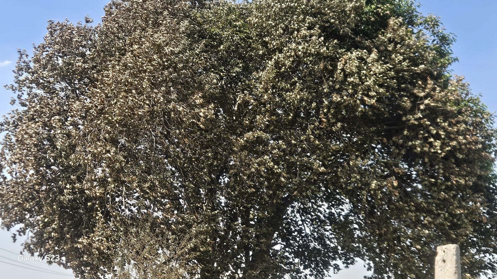
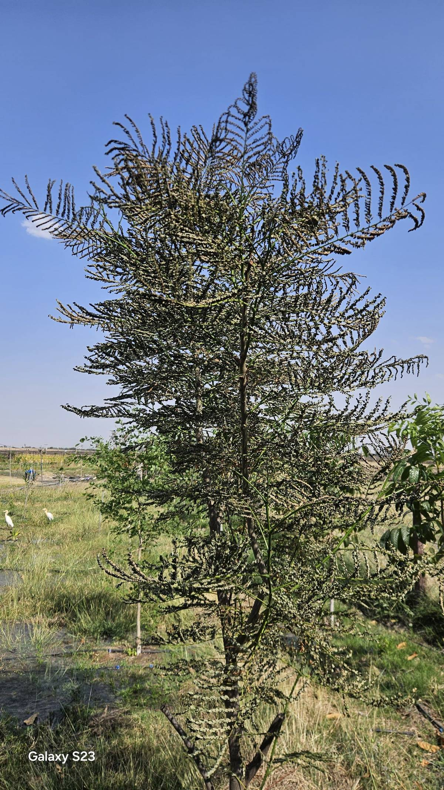
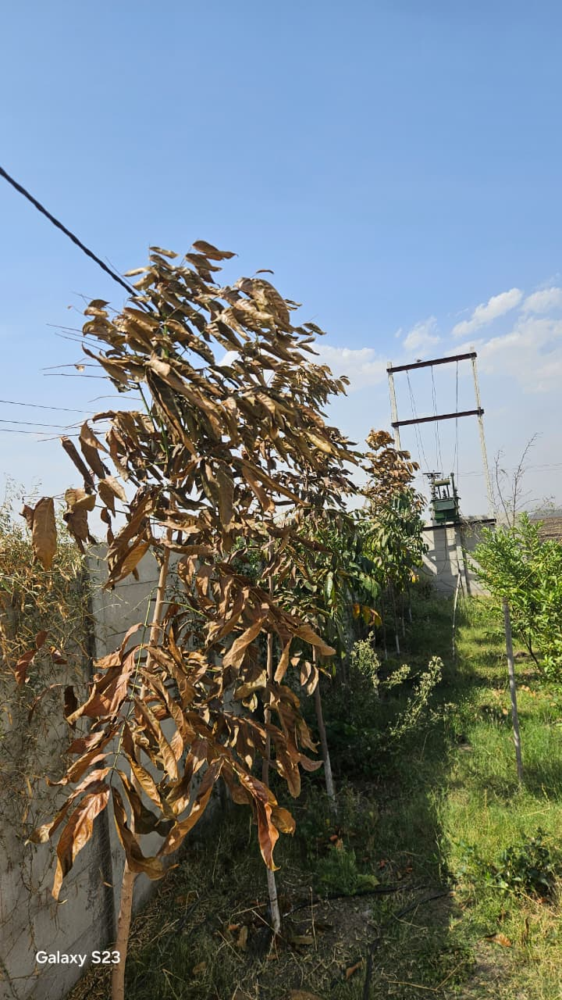
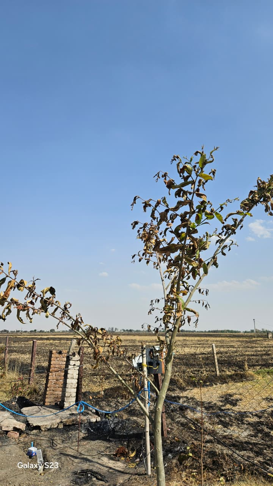
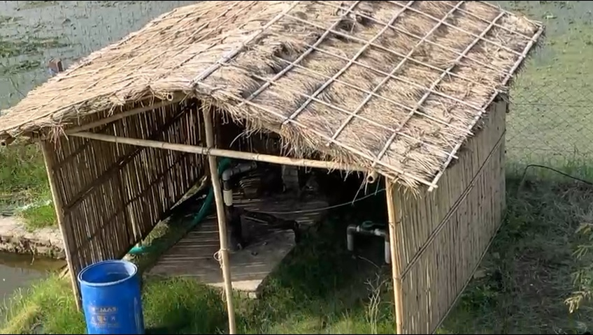
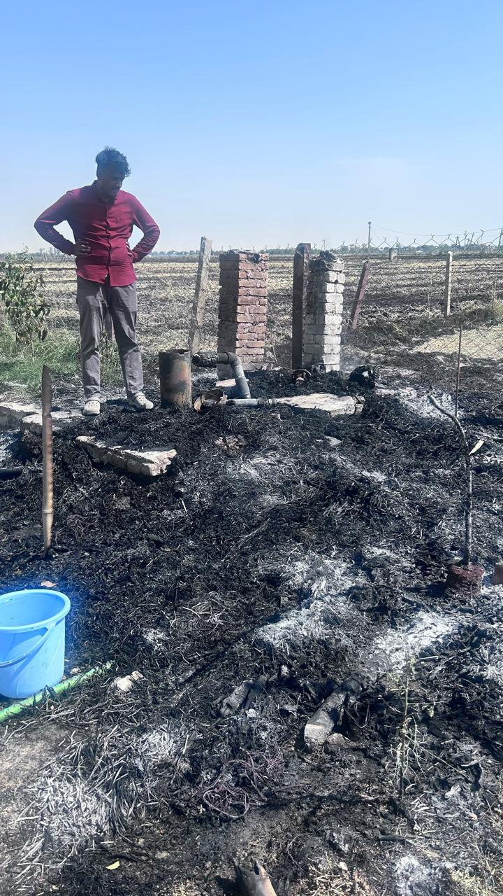
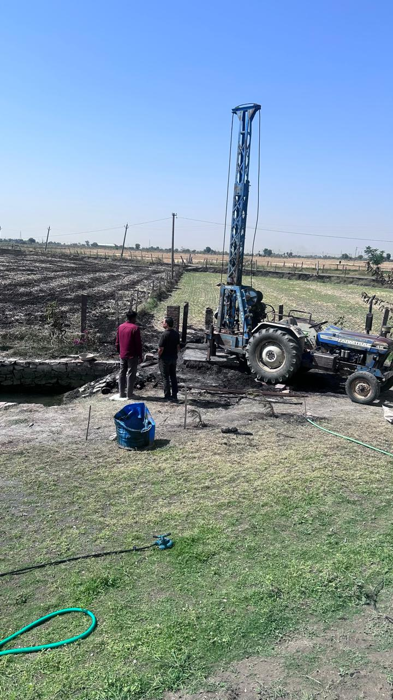

Before This Is a Story About Fire
Before this is a story about fire, it is a story about neighbours. A farm does not live alone. What the farm next to yours does — what they spray, what they flood, what they leave behind — can change the fate of your soil, your water, and your crop. Over time we have come to see three ways a neighbouring farm can reach across the fence line and affect ours:
Three ways a neighbour's farm can change yours
- Chemicals. Pesticide and herbicide drift from conventional spraying — carried by wind, it settles on your leaves, your soil, and eventually your food.
- Flooding. Heavy water use on neighbouring paddy (rice) fields — over-irrigation seeps sideways and raises the water table under your own land, creating unwanted moisture, waterlogged roots, and salt build-up.
- Fire. Dry fields left empty between crops, catching on any spark and racing into the next farm, and the next.
This blog is about the third. It happened to us yesterday.
What Happened
On the afternoon of April 19, 2026, smoke rose over Khedli Pandya. Not from our farm — from the next one. A wall of flame moved across the wheat stubble of the neighbouring field, pulled forward by the dry pre-monsoon wind. By the time anyone reached the boundary, tens of acres of surrounding farmland were on fire — possibly more; we could not see the far edge through the smoke. The flames crossed our north fence and stopped, mostly, at the edge of the green. But the wind that was driving the fire was also blowing straight at our farm — and the heat it carried reached past the fence in a way the flames didn't. Leaves well inside our boundary began to scorch that same afternoon.
"This happened yesterday afternoon when fire was coming from our new plot side at a high speed, burning the entire area. At that time the wind was also blowing towards our farm, and the fire was blowing so extreme that its heat burnt many plants inside our farm boundary as well — 90% of the Jamun leaves also got burnt, along with vine-flower plants and some native plants."
— Our farm supervisor, on site as the fire crossed the neighbour's field
By evening the flames were gone, the farmers had gone home, and we thought the damage was done. It wasn't.
The next afternoon, with those same scorched fields still radiating heat under a cloudless Rajasthan sky, a sudden strong wind picked up. For about five minutes, a blast of super-heated air rolled across our land. The temperature spiked. A dark cloud of ash, dust and smoke travelled with it — low and heavy. The air became unbearable — hard to stay outside, hard to breathe. No flame touched our farm that day. The heat alone was enough to push the canopy damage further.
The fire didn't start on our farm. Most of the damage didn't come from flame. And most of the worst of it was over inside an hour on day one, and five minutes on day two.
The Scale of What We Lost
When we walked the farm that evening, this is what we found:
What the fire and its aftermath cost us
- 50+ young plants lost. Ten were down to direct flame on day one. The full count kept climbing over the next twenty-four hours as plant after plant gave in to the wind-driven heat — two years of growth along our northern boundary, gone.
- 90% of our oldest Jamun canopy burnt. Trees that have stood on this land for decades — most of their leaves burnt by the heat of the fire and the day-two heat wave. Recovery will take seasons, not weeks.
- Vine-flowering plants and native plants lost inside the boundary. Ornamental and native species well past the fence line also gave in to the heat. The fire never touched them; the air did.
- Boundary-tree leaves scorched along the northern fence line. Row after row of younger trees dropped dry, brown leaves within hours of the hot gust.
- Tubewell hut, motor and drip network destroyed. The bamboo-and-thatch hut burned to its brick pillars. The motor slipped down the well shaft as the structure collapsed. The drip network feeding the nearby beds is gone.
- Five unbreathable minutes. A dark cloud of ash, smoke and dust rolled through on day two. For about five minutes the air was unbearable — no one could stay outside.




And at the tubewell, this is what was left of the hut:


Why It Happened
Across the fields that surround us, farmers grow wheat in the winter season. By early April, the harvest is done. What's left behind is parali — the dry stalks and stubble of the cut crop, rooted in earth that has already started to bake under the rising summer sun.
Parali is extraordinarily flammable. After a Rajasthan winter and the first weeks of April heat, it is bone-dry. Traditionally, many farmers burn it on purpose — a quick, cheap way to clear the field and prepare it for the next crop. This year, the farmers near us didn't light it. They knew the wind was wrong, the heat was rising, the risk was high. And it still caught fire anyway.
A spark — from a wire, a cigarette, a passing tractor — is all it takes. Once a dry parali field catches, the fire moves at the speed of the wind.
This is also not the first time. The same thing happened last year, on a neighbouring farm boundary, in the same season. Two years running — which means this isn't an accident. It is a pattern.
The state recognises the problem but has no real answer for it. Across Kota district, the government's response is to cut off farm electricity from 9 AM to 6 PM for the entire summer, to reduce the chance of accidental short-circuit ignitions on dry fields. When the official fire-prevention policy is "turn off the power," you know the system has run out of ideas.
Meanwhile, summers keep getting hotter. April in Kota now routinely crosses 42°C. Soil holds less moisture. Stubble dries faster. Every year, the window between "safe" and "catastrophic" narrows.
Why Some of the Farm Held
The losses above sit on the immediate boundary and in the canopy of our oldest trees. Everything further inside — the food forest, the vegetable beds, the mulched soil, the younger food plants — did not burn on day one and did not crisp in the day-two heat wave. That wasn't luck. It was design.
Our fields were green. We had standing crops, living mulch, and layered canopy trees holding moisture in the soil and the air. We have a pond just inside the northern fence line, which acted as a natural firebreak: the flames reached the water and stopped. A monoculture field is a desert between seasons — dry, dead and combustible. A permaculture farm is never fully empty. That difference is what kept the heart of the farm standing, even as the boundary paid the price.

What We're Going to Try
We don't know what will work. Most of the damage came through the air, not through the soil — heat, not flame, took most of our canopy — and that means some of the usual answers (cover crops, mulch, a greener ground) only solve half the problem. We'll only know what really helps on this road after a full year of trying, watching, and adjusting. These are what we're going to attempt in the meantime, and what we'd like to discuss with the farmers around us.
Things we'd like to try with our neighbours. We can't control what the next field does, but we can start conversations. Some of these we already do on our own land — our fields have cover crops and legumes most of the year, and we don't burn parali — but one farm doing this is not enough when the fire moves at the speed of the wind. We'd like to talk about it with the farms around us.
What we'd like to see more of on the road
- Not leaving the field empty in the crop-changing season. Our own fields are always under something green — a living field is much harder to ignite than bare stubble. We'd like the fields around us to try the same.
- Nitrogen-fixing legumes between wheat and the next crop — dal (lentils), chana (chickpea), moong. We've been growing these for years. They fix nitrogen into the soil for free, don't need much water, and keep the field alive and green between seasons. Whether the economics work for a larger conventional farm, we'll only know if a few are willing to try.
- Not burning parali. Mulching it back into the soil, composting it, or letting animals graze it down. Every acre of burned stubble is a potential source for the next wildfire.
- Talking to each other. The fire risk affects everyone on the road — and no single farm can fix it alone.
Things we're going to try on our own farm. Some of these we already had; the fire showed us where they worked and where they didn't.
Experiments we're running this year
- A wider water-and-green buffer along the north edge. The pond held the flames on day one. We want to extend that buffer along more of the boundary.
- A fast-growing, wind-breaking crop along the boundary. A permanent line of trees on the fence doesn't work for us — trees grow out sideways and end up in the neighbour's field. Instead we want to trial a dense, fast-growing seasonal crop (something tall and leafy that comes up in weeks, not years) to sit between the neighbour's parali and our first row of plants. It slows the wind, absorbs some of the heat, and can be cut back every year so it never crosses the line.
- Keep extending our green ground cover. We already keep the soil under mulch and living cover between beds. What the fire showed us is that ground cover alone isn't enough when the damage arrives through the air — we'll keep building it, but we'll stop expecting it to do the boundary's job.
- Critical infrastructure moved inward. The next tubewell hut won't sit on the boundary. We're rebuilding further in.
- A proper firebreak. A maintained gap between the neighbour's field and our first row of trees.
None of these are solutions yet. They're attempts. We'll document what works and what doesn't, and report back after the next fire season.
What We're Doing Right Now
The drill rig is on site to pull the motor out of the well. Over the coming weeks we'll rebuild the irrigation system — further from the boundary this time — lay out the firebreak, and start trialling fast-growing wind-break crops along the northern fence so next summer the boundary is carrying something alive instead of absorbing everything. We'll also start conversations with farmers on the surrounding roads about parali, cover crops, and what any of us can afford to try.
A fire that doesn't start on your farm can still take parts of your farm. The answer isn't a bigger fence. We think it's better soil — on our land, and on the land around us. We'll keep doing our part, keep asking others to do theirs, and come back with what we learn.
← All blog posts